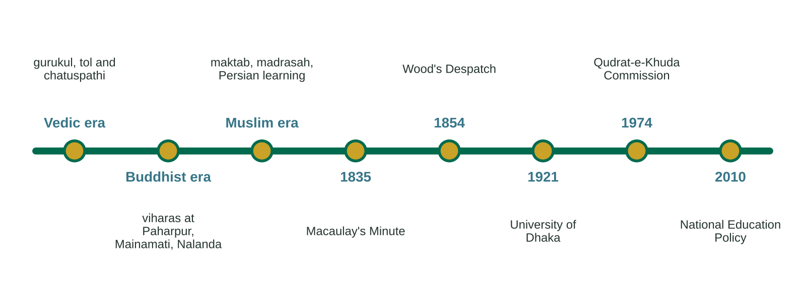

PC 112 Education in Bangladesh
History, structure, governance, sub-sectors and SDG 4 in the national system of education
Contents
About this course
This course maps the national system of education in Bangladesh: its historical roots from the Vedic and Buddhist eras to the present, its constitutional and legal framework, and each sub-sector (pre-primary and primary, secondary, tertiary, madrasah, technical and vocational, and refugee education). For every sub-sector the notes cover goals, structure, access and participation, curriculum and assessment, management and financing, teacher education, development programmes and the main issues with possible solutions, all framed against Sustainable Development Goal 4.
Course objectives
Explain the concept, structure, goals and legal framework of the national system of education.
Describe the status, governance, curriculum, assessment and finance of each sub-sector.
Understand madrasah education as a parallel stream and TVET as a driver of economic development.
Diagnose the major challenges and propose evidence-based solutions aligned with SDG 4.
Each unit follows the official syllabus order. Read the narrative first, then the Key point boxes, then test yourself with the Exam focus questions.
Golden boxes = must-remember ideas. Teal boxes = definitions and study tips. Green boxes = Bangladesh context.
The final chapter is a question bank (MCQs with answers, short and broad questions) in the style of university examinations, followed by full references in APA 7th style.
Statistics on enrolment, budgets and policies change every year. Before an exam, check the latest BANBEIS, DPE, UGC and UNESCO figures.
Unit 1: Education as a National System
What the curriculum saysUnit 1: Education as a National System-A phase of Transition · 7 contact hours
At the end of this unit learners will be able to
- describe brief history of education from Aryan till today
- explain relationship between goals & objectives of education and philosophy of education
- explain origin and components of national system of education
- demonstrate present structure of education system
- describe legal frame work of education in Bangladesh
- provide explanation of the structure of education system in Bangladesh
- describe the goals of sustainable development in relation to education (SDG-4)
- Concept of a national system of education
- Historical development of education starting from Aryan-till today
- Origin, component, types of national system of education
- Goals, objectives, philosophy, policies, constitutional provision and legal frame work
- Structure of education
- Sustainable development goals (SDG-4)
1.1 Concept of a national system of education
A national system of education is the organised whole of institutions, programmes, laws, policies, curricula, personnel and financing through which a state provides education to its population in line with its national philosophy and development goals. It has a common legal basis, a defined structure (levels and streams), governance (ministries, directorates, boards), standards (curricula, examinations, qualifications) and financing mechanisms. A national system is not uniform, but it is coherent: its parts are linked through recognised equivalences and pathways.
Components of a national system

Figure 1. Components of a national system of education
Types of national systems
Centralised (France historically; Bangladesh largely): curriculum, textbooks, examinations and teacher recruitment controlled nationally.
Decentralised (USA, Germany by state): states or local authorities control most decisions.
Mixed / semi-centralised: national frameworks with local implementation (England after 1988; Bangladesh's school management committees and upazila education offices are an element of this).
1.2 Historical development of education in Bengal and Bangladesh

Figure 2. Milestones in the history of education in Bengal and Bangladesh
Ancient period (Vedic/Aryan, c. 1500 BCE onward)
Education was religious and residential, organised in the gurukul (the pupil lived in the teacher's home), tol and chatuspathi (centres of Sanskrit learning). The curriculum covered the Vedas, grammar, logic, philosophy and astronomy, with oral memorisation and upanayana initiation. It was restricted largely to upper castes and to boys.
Buddhist period (c. 6th century BCE to 12th century CE)
Monastic viharas became great universities open to all castes: Nalanda, Vikramashila, Odantapuri and, in present-day Bangladesh, Somapura Mahavihara (Paharpur, Naogaon), Shalban Vihara (Mainamati, Cumilla) and Jagaddala. Teaching used discussion and debate, and the curriculum combined religion with logic, medicine and the arts.
Muslim period (13th to 18th century)
Elementary maktabs attached to mosques taught reading of the Qur'an, writing and arithmetic; madrasahs offered higher learning in theology, law, logic, Arabic and Persian. Persian was the court language, and patronage came from sultans, nawabs and landlords. Pathshalas continued as indigenous elementary schools.
British colonial period (1757 to 1947)
| Year | Event | Significance |
|---|---|---|
| 1780 | Calcutta Alia Madrasah (Warren Hastings) | Origin of the Alia madrasah stream |
| 1813 | Charter Act | First government allocation (Rs. 1 lakh) for education |
| 1835 | Macaulay's Minute | English-medium Western education; "downward filtration" theory |
| 1854 | Wood's Despatch | "Magna Carta of English education in India": departments of education, grants-in-aid, universities |
| 1857 | University of Calcutta | Affiliating, examining university |
| 1882 | Hunter Commission | Emphasis on primary education under local bodies |
| 1917–19 | Sadler (Calcutta University) Commission | Recommended a teaching and residential university at Dhaka |
| 1921 | University of Dhaka | First university in present-day Bangladesh |
| 1930 | Bengal (Rural) Primary Education Act | Early compulsory education legislation |
Pakistan period (1947 to 1971)
Commissions included the Akram Khan Committee (1949), the Ataur Rahman Khan Commission (1957), the Sharif Commission (1959), whose recommendations on fees and a three-year degree triggered the 1962 student movement, the Hamoodur Rahman Commission (1964) and the Nur Khan proposals (1969). The Language Movement (1952) made the medium of instruction a national political question.
Bangladesh (1971 to present)
| Year | Commission / policy | Key recommendations |
|---|---|---|
| 1974 | Qudrat-e-Khuda Education Commission | Secular, science- and work-oriented education; free, compulsory 8-year primary; Bangla medium; one stream |
| 1979 | Interim Education Policy | Reorganisation of primary and secondary levels |
| 1983 | Mazid Khan Commission | Structural reforms (controversial, not implemented) |
| 1988 | Mofiz Uddin Commission | Comprehensive reform proposals |
| 1997 | Shamsul Haque Committee | Basis for the 2000 policy |
| 2000 | National Education Policy 2000 | Approved but later suspended |
| 2003 | Moniruzzaman Miah Commission | Proposals during 2001–06 |
| 2010 | National Education Policy (Kabir Chowdhury Committee) | One-year pre-primary; primary to Class VIII; secondary IX–XII; common core in all streams; creative questions; TVET expansion; permanent education commission |
| 2021 | National Curriculum Framework | Competency-based, experiential curriculum from pre-primary to Class XII |
Policy in Bangladesh has changed quickly since 2023. The competency-based NCF 2021 curriculum was rolled out from 2023, and after the political transition of 2024 the authorities announced a return to a revised version of the 2012 curriculum for secondary classes from 2025 while a new reform is prepared. Always check the latest NCTB and Ministry announcements before your exam, because examiners like to ask about current reforms.
1.3 Goals, philosophy, policies and constitutional provisions
Bangladesh's educational philosophy draws on the four founding state principles of the 1972 Constitution (nationalism, socialism, democracy and secularism), the spirit of the Liberation War and the Language Movement, and a commitment to science, humanism and social justice. NEP 2010 lists 30 aims and objectives, including:
reflecting the spirit of the Liberation War and developing patriotism;
developing a humane, rational, scientifically minded and creative citizenry;
ensuring equal opportunity regardless of gender, religion, ethnicity, location or disability;
building skilled human resources to meet the needs of a knowledge economy;
promoting moral and religious values and respect for all faiths.
Constitutional provisions. Article 15 (education as a basic necessity), Article 17 (free and compulsory education; relating education to the needs of society; removal of illiteracy), Article 19 (equality of opportunity), Article 23 (preservation of culture), Article 28 (non-discrimination and special provisions for women, children and backward sections) and Article 41 (religious education must not be imposed on a person of another faith).
Legal framework
Primary Education (Compulsory) Act 1990
Private University Act 1992, replaced by the Private University Act 2010
University Grants Commission of Bangladesh Order 1973 (President's Order No. 10)
Non-Government Teachers Registration and Certification Authority (NTRCA) Act 2005
Persons with Disabilities Rights and Protection Act 2013 and the Neuro-Developmental Disability Trust Act 2013
Non-Formal Education Act 2014
Bangladesh Accreditation Council Act 2017
National Skills Development Authority Act 2018
Al-Haiatul Ulya Lil-Jamiatil Qawmia Bangladesh Act 2018 (recognition of the Qawmi Dawra-e-Hadith degree)
Draft Education Act (pending)
1.4 Structure of the education system
")
Figure 3. The structure of formal education in Bangladesh (indicative ages)
Key structural features:
Three main streams (general, madrasah and technical-vocational) plus the independent Qawmi madrasah and English-medium (O/A level) schools.
Public examinations at the end of Class X (SSC/Dakhil/SSC Vocational) and Class XII (HSC/Alim/HSC Vocational), conducted by 11 education boards: 9 general boards (Dhaka, Rajshahi, Cumilla, Jashore, Chattogram, Barishal, Sylhet, Dinajpur, Mymensingh), the Bangladesh Madrasah Education Board and the Bangladesh Technical Education Board.
Terminal examinations at Class V (PECE) and VIII (JSC/JDC), introduced in 2009–10, have not been held since 2020.
Non-formal routes under the Bureau of Non-Formal Education provide second-chance and literacy programmes, with equivalency under the NFE Act 2014.
1.5 Sustainable Development Goal 4
SDG 4: "Ensure inclusive and equitable quality education and promote lifelong learning opportunities for all" (United Nations, 2015; UNESCO, 2016).
| Target | Focus |
|---|---|
| 4.1 | Free, equitable, quality primary and secondary education with relevant learning outcomes |
| 4.2 | Quality early childhood development, care and pre-primary education |
| 4.3 | Equal access to affordable, quality TVET and tertiary education |
| 4.4 | Increase youth and adults with skills for employment, decent jobs and entrepreneurship |
| 4.5 | Eliminate gender disparities; equal access for the vulnerable, persons with disabilities, indigenous peoples |
| 4.6 | Youth and a substantial proportion of adults achieve literacy and numeracy |
| 4.7 | Knowledge and skills for sustainable development, global citizenship and a culture of peace |
| 4.a | Build and upgrade safe, inclusive, effective learning environments |
| 4.b | Expand scholarships for developing countries |
| 4.c | Increase the supply of qualified teachers |
Remember "7 + 3": seven outcome targets (4.1–4.7) and three means of implementation (4.a–4.c). The Education 2030 Framework for Action recommends spending 4–6% of GDP and/or 15–20% of public expenditure on education. Bangladesh has spent roughly 2% of GDP on education in recent years, one of the lowest shares in South Asia, so this is a standard "issue" point in any essay.
Likely questions: "Trace the historical development of education in Bangladesh." "Describe the present structure of the education system." "Explain SDG 4 and assess Bangladesh's progress."
Unit 2: Pre-Primary and Primary Education
What the curriculum saysUnit 2: Pre-Primary and Primary Education · 07 contact hours
- describe present situation of pre-primary and primary education in Bangladesh in relation to goals, access, participation, transition and equity
- explain curriculum matrix of pre-primary and primary education on the basis of learning areas
- explain goal, objectives, components and background of Primary Education Development Programs (PEDP)
- outline the administrative structure of primary education and major roles of MoPME & DPE
- analyse functions of teacher training institutes at primary education
- identify challenges, gaps and issues of primary education and suggest possible solutions to meet up the goals of sustainable development
- Present structure, goals and objectives
- Access, participation, transition and equity
- Pre-primary curriculum matrix: Learning areas, learning activity, learning outcomes
- Primary curriculum & Textbooks, Assessment Guideline and role of NCTB
- Planning, management and financing of Primary Education
- Administrative structure
- Role of Ministry of Primary and Mass Education (MoPME); Directorate of Primary Education
- Ongoing projects and development programs
- Initiatives and concerned organisations /institutions: GO, NGO and INGOs
- Primary Teacher Education: Institute of Education and Research, Diploma in Primary Education (DPEd) in Primary Teacher Training Institute (PTI), Sub-Cluster Training and Upazila Resource
- Major issues, challenges and possible solutions
2.1 Goals and present structure
Primary education (Classes I–V, official age 6–10) is free and compulsory, and is administered by the Ministry of Primary and Mass Education (MoPME) through the Directorate of Primary Education (DPE). One year of pre-primary education (age 5) was introduced nationally in government primary schools from 2010 following NEP 2010; NCF 2021 envisages two years (ages 4+ and 5+). Primary education is delivered by government primary schools, newly nationalised schools (about 26,000 registered non-government schools were nationalised in 2013), ebtedayee madrasahs, kindergartens, NGO schools (such as BRAC) and community schools.
The goals of primary education (NEP 2010; National Primary Education goals) are to develop foundational literacy and numeracy, physical and mental development, moral and human values, patriotism and the spirit of the Liberation War, scientific and creative thinking, environmental awareness and readiness for further learning.
2.2 Access, participation, transition and equity
Bangladesh has made major progress since 1990:
Near-universal access: primary net enrolment has exceeded 95% in recent Annual Primary School Census (APSC) reports.
Gender parity achieved: girls' enrolment now equals or exceeds boys' at primary level.
Internal efficiency improved: dropout fell from roughly 50% in the early 2000s to under 20%, and completion rates rose.
Remaining equity gaps: children in urban slums, char and haor areas, hill tracts and tea gardens; working children; children with disabilities; and ethnic minority children taught in a language they do not speak at home.
Figures change every year. Use the latest APSC (DPE) and BANBEIS reports when you cite numbers in an exam, and always give the year and the source.
2.3 Curriculum, textbooks and assessment
Pre-primary curriculum is play-based and organised as a matrix of learning areas (physical and motor development, socio-emotional development, language and communication, early mathematics, environment and science, arts and creativity, and health and hygiene), with suggested learning activities (play, songs and rhymes, stories, drawing, games) and expected learning outcomes.
Primary curriculum has been competency-based since the 1990s revisions, with terminal competencies for the end of Class V and class-wise and subject-wise learning outcomes. The 2012 revision listed 29 terminal competencies. Subjects include Bangla, English, Mathematics, Bangladesh and Global Studies, Primary Science, Religion and Moral Education, plus Physical Education, Music and Arts and Crafts.
NCTB (National Curriculum and Textbook Board) develops curricula, writes and prints textbooks and distributes them free (the national Textbook Festival on 1 January), and prepares teacher guides. Assessment includes continuous assessment, term examinations and the National Student Assessment (NSA), a sample-based survey of learning outcomes in Bangla and Mathematics in Classes III and V.
2.4 Planning, management and financing

Figure 4. Administrative structure of primary education
MoPME sets policy, plans the budget and coordinates with development partners. It also oversees the Bureau of Non-Formal Education (BNFE) and the National Academy for Primary Education (NAPE), Mymensingh.
DPE implements programmes, recruits and posts teachers, manages stipends and school feeding, and runs teacher training through the PTIs.
Financing comes mainly from the government revenue budget and the Annual Development Programme (ADP), with sector-wide support from development partners (World Bank, ADB, EU, JICA, UNICEF and others) pooled under PEDP.
2.5 Ongoing projects and development programmes
| Programme | Period | Focus |
|---|---|---|
| PEDP I | 1997–2003 | Collection of project-based interventions |
| PEDP II | 2004–2011 | First sub-sector-wide approach (SWAp): access, quality, management |
| PEDP3 | 2011–2017 (extended) | Learning outcomes, participation and disparity reduction, decentralisation; results-based financing (DLIs) |
| PEDP4 | 2018–2025 (extended) | Quality learning for all from pre-primary to Class V; teacher development; ICT; inclusive education |
| Primary Education Stipend Programme | ongoing | Cash transfer to mothers via mobile banking |
| School Feeding Programme | ongoing | Biscuits and cooked meals to improve attendance and nutrition |
| Reaching Out-of-School Children (ROSC) | 2004 onward | Ananda schools / learning centres for out-of-school children |
Government, NGO and INGO initiatives. NGOs such as BRAC, Dhaka Ahsania Mission, FIVDB and CAMPE (Campaign for Popular Education, a network that publishes the Education Watch reports), and INGOs such as Save the Children, Plan International, UNICEF and Room to Read, contribute through non-formal schools, early-grade reading programmes, research and advocacy.
2.6 Primary teacher education
Diploma in Primary Education (DPEd): an 18-month programme launched in 2012 (replacing the one-year Certificate-in-Education) delivered in Primary Teacher Training Institutes (PTIs) with school-based practice. It was designed with IER, University of Dhaka, and NAPE.
Sub-cluster training: short, regular in-service subject training for teachers of a cluster of schools, led by AUEOs.
Upazila Resource Centres (URCs): in-service subject-based and ICT training at upazila level.
IER, University of Dhaka and other universities: degree programmes, curriculum and research support.
NAPE: national apex institution for primary teacher education, research and training of PTI instructors.
2.7 Major issues, challenges and possible solutions
| Issue | Evidence / cause | Possible solutions |
|---|---|---|
| Low learning outcomes | NSA results show many Class V pupils below grade-level competency in Bangla and Mathematics | Early-grade reading and numeracy, structured pedagogy, formative assessment, remediation |
| Teacher shortage and high pupil-teacher ratio | Large classes; double-shift schools | Recruitment, single-shift schools, better deployment to hard-to-reach areas |
| Short contact hours | Double shifts mean fewer instructional hours | Phased transition to single shift; more classrooms |
| Equity gaps | Haor, char, CHT, slums, disability, language | Targeted stipends, mother-tongue-based MLE, inclusive education, flexible schedules |
| Rote learning and examination pressure | PECE culture, guidebooks, coaching | Competency-based assessment, ban on guidebooks, teacher professional development |
| Weak school-level management | Limited SMC capacity | SMC training, School Level Improvement Plans (SLIP) with grants |
| Low public financing | About 2% of GDP | Raise allocation towards 4–6% of GDP |
Likely questions: "Describe the administrative structure of primary education." "Evaluate the contribution of PEDP to primary education." "Analyse the major challenges of primary education in Bangladesh and suggest solutions in line with SDG 4."
Unit 3: Secondary Education
What the curriculum saysUnit 3: Secondary Education · 8 contact hours
- sketch present structure of secondary education
- describe the major role and responsibilities of MoE and DSHE
- identify the Govt./Public and Non-Govt. Secondary Schools role in managing and implementing quality secondary education
- analyse functions of teacher training institutes at secondary education
- identify problems and issues of secondary education and find out the possible solutions to meet up the goals of sustainable development
- Present structure, goals and objectives
- Access, participation, completion and equity
- Curriculum, Textbook, Teachers Guide, Assessment and role of NCTB
- Evaluation and examination system and the role of Education Boards
- Planning, Management and financing of Secondary education
- administrative structure
- role of Ministry of Education (MoE); Directorate of Secondary and Higher Education
- Ongoing projects and development programs i.e. TQI, SESIP, SBA
- Secondary Teacher Education: Institute of Education and Research, TTCs-Public and Private;
- Major issues, challenges and possible solutions
3.1 Present structure, goals and objectives
Secondary education comprises junior secondary (Classes VI–VIII), secondary (IX–X), ending with the SSC examination, and higher secondary (XI–XII), ending with HSC. NEP 2010 proposed restructuring to IX–XII with primary up to VIII; this has not been fully implemented. Streams after Class VIII have traditionally been Science, Humanities and Business Studies. NCF 2021 proposed abolishing streaming until Class X, which became one of the most debated reforms.
Objectives (NEP 2010): develop the creative and critical faculties of learners, prepare them for higher education and employment, ensure a common core curriculum in all streams, develop moral and patriotic values and promote science and ICT.
3.2 Access, participation, completion and equity
Since the 1990s secondary enrolment has expanded rapidly. The Female Secondary School Stipend Programme (from 1994 nationally) is internationally recognised for helping Bangladesh achieve gender parity and, at many levels, more girls than boys enrolled. Persistent challenges include high dropout (particularly for poor boys who enter work and girls affected by child marriage), low completion rates, and urban–rural and regional disparities. More than 95% of secondary schools are non-government (privately managed but receiving government salary support under the Monthly Pay Order, MPO).
3.3 Curriculum, textbooks, teachers' guides and assessment
NCTB develops the secondary curriculum, textbooks and teachers' guides. The 2012 curriculum emphasised learning outcomes and creative (structured) questions (CQ), introduced from 2008 to discourage rote learning. The NCF 2021 curriculum introduced experiential learning, project work and largely school-based, competency-based assessment with "performance indicators", before the 2024–25 policy reversal noted in Unit 1.
Evaluation and examination system
Education boards conduct SSC and HSC examinations, issue certificates and register institutions. Results use a GPA system (introduced 2001 for SSC; 5.0 maximum).
School-Based Assessment (SBA), piloted from the mid-2000s with support from the Secondary Education Sector Improvement Project (SESIP), aimed to add continuous assessment of practical and affective learning. It faced problems of teacher capacity, workload and reliability.
NAEM and BEDU (Bangladesh Examinations Development Unit) have supported training in question-setting and assessment.
3.4 Planning, management and financing

Figure 5. Governance of secondary education
Ministry of Education (MoE) has two divisions (since 2016–17): the Secondary and Higher Education Division (SHED) and the Technical and Madrasah Education Division (TMED).
DSHE supervises secondary schools and colleges, manages MPO, transfers and postings in government institutions, and implements projects.
Other bodies: NCTB, BANBEIS (statistics), NAEM (training of managers and teachers), DIA (Directorate of Inspection and Audit), NTRCA (registration and certification of non-government teachers) and the education boards.
3.5 Ongoing projects and development programmes
| Project | Focus |
|---|---|
| TQI-SEP (Teaching Quality Improvement in Secondary Education Project), phases I and II (c. 2005–2017) | In-service training, CPD for secondary teachers, strengthening TTCs and HSTTIs |
| SESIP (Secondary Education Sector Investment Program, ADB) | Sector reform: curriculum, assessment including SBA, management |
| SEQAEP (Secondary Education Quality and Access Enhancement Project, World Bank) | Stipends, tuition support, teacher incentives in poorer upazilas |
| SEDP (Secondary Education Development Program, 2018 onward) | Sector-wide programme for access, quality, governance |
| SBA (School-Based Assessment) | Continuous and formative assessment practices |
3.6 Secondary teacher education
IER, University of Dhaka and other university institutes: BEd (Hons), MEd, MPhil and PhD.
Government Teachers' Training Colleges (TTCs): one-year BEd and MEd for in-service and pre-service teachers; private TTCs also offer BEd.
Higher Secondary Teachers' Training Institutes (HSTTIs): in-service training of college teachers.
NAEM: foundation and management training for education cadre officers and heads.
Bangladesh Open University: distance BEd and MEd.
3.7 Major issues, challenges and possible solutions
Quality and learning outcomes: many learners lack higher-order skills; private tutoring and guidebooks are widespread (Nath, 2008). Solutions: teacher CPD, formative assessment, regulation of coaching, better textbooks.
Teacher quality and shortages: especially in English, Mathematics and Science in rural schools; untrained teachers in non-government schools. Solutions: NTRCA merit-based recruitment, subject-based training, incentives.
Governance: politicisation of managing committees, irregularities in MPO and recruitment. Solutions: transparency, e-management, accountability.
Equity and dropout: poverty, child labour, child marriage. Solutions: stipends, school meals, safe schools, second-chance programmes.
Curriculum instability: frequent reforms reduce teacher confidence. Solutions: evidence-based piloting, stakeholder consultation, a permanent education commission (as proposed in NEP 2010).
Unit 4: Higher / Tertiary Education
What the curriculum saysUnit 4: Higher/Tertiary Education · 4 contact hours
- explain with examples types of higher education institutions in Bangladesh and their features
- describe the present situation of higher education in Bangladesh
- mention the role and responsibilities of University Grants Commission (UGC) in planning, management, and financing of higher education
- identify problems and issues of higher education and find out the possible solutions to meet up the goals of sustainable development
- Goal and objectives
- Types: universities, colleges, specialised institutions
- Present structure, access and participation in Higher Education
- Management and financing
- Role of University Grants Commission (UGC)
- Ongoing projects and development programs
- Prospects, problems and solutions
4.1 Goals and objectives
Higher education aims to create and disseminate knowledge, produce skilled professionals and leaders, conduct research for national development, and nurture critical, ethical citizenship. The Strategic Plan for Higher Education in Bangladesh 2006–2026 (UGC) set goals of quality, relevance, research capacity, governance and financing reform.
4.2 Types of higher education institutions
| Type | Examples | Features |
|---|---|---|
| Public general universities | University of Dhaka (1921), Rajshahi (1953), Chittagong (1966), Jahangirnagar (1970) | Mostly autonomous; the four older universities are governed by the 1973 Acts |
| Public science and technology / specialised universities | BUET, Bangladesh Agricultural University, SUST, medical universities | Professional and technical focus |
| Affiliating universities | National University (1992); Islamic Arabic University (2013) | Affiliate thousands of colleges (degree pass, honours, masters) and Fazil/Kamil madrasahs |
| Open university | Bangladesh Open University (1992) | Distance and open learning |
| Private universities | North South University (1992) and many others | Governed by the Private University Act 2010; fee-financed |
| Colleges and specialised institutions | Government and non-government colleges, medical colleges, engineering colleges, TTCs | Teaching under affiliating universities |
| International universities | Asian University for Women | Regional mandates |
4.3 Access, participation and management
Tertiary enrolment has expanded rapidly, with National University colleges accounting for the largest share. Access remains unequal by income, region and gender in some fields. University Grants Commission (UGC) was established by President's Order No. 10 of 1973. Its roles:
allocating government grants to public universities;
planning and coordinating development of higher education;
approving new programmes and monitoring private universities;
quality assurance (through the Quality Assurance Unit and Institutional Quality Assurance Cells, IQACs, created under HEQEP);
advising the government on higher education policy.
The Bangladesh Accreditation Council (BAC), created by the 2017 Act, is responsible for programme and institutional accreditation.
4.4 Ongoing projects and development programmes
HEQEP (Higher Education Quality Enhancement Project, World Bank, c. 2009–2018): competitive Academic Innovation Fund, IQACs, BdREN (Bangladesh Research and Education Network), digital library resources.
HEAT (Higher Education Acceleration and Transformation project, World Bank, approved 2021): research, quality assurance, digital transformation and labour-market relevance.
4.5 Prospects, problems and solutions
| Problem | Possible solution |
|---|---|
| Low research output and funding | Competitive research grants; PhD scholarships; university–industry links |
| Session jams and campus politics | Academic calendars, governance reform, depoliticisation |
| Graduate unemployment and skills mismatch | Market-relevant curricula, internships, career services, BNQF alignment |
| Quality variation among private universities and NU colleges | Accreditation (BAC), IQACs, faculty development |
| Low public financing | Diversified funding, needs-based scholarships, performance-based funding |
Likely questions: "Discuss the role of the UGC in planning and financing higher education." "Identify the problems of higher education in Bangladesh and suggest remedies."
Unit 5: Madrasah Education
What the curriculum saysUnit 5: Madrasah Education · 4 contact hours
- present the structure of Madrasah education in Bangladesh
- describe the roles and responsibilities of concerned organisations in management and financing
- evaluate the GoB and project initiatives to improve the quality of madrasah education
- analyse functions of teacher training institutes at madrasah education
- identify problems and issues of Madrasah education and find out the possible solutions to meet up the goals of sustainable development
- Origin, concept and types of Madrasah education
- Present structure, goals, objectives, access and participation
- Curriculum, assessment and instructional processes
- Management and financing
- Technical and Madrasah Education Division
- Madrasah Education Board
- Bangladesh Madrasah Teachers Training Institute (BMTTI)
- Major issues and problems and their possible solutions
5.1 Origin, concept and types
Madrasah (Arabic, "place of study") refers to institutions of Islamic learning. In Bengal, madrasahs flourished under the Sultanate and Mughal rulers; the Calcutta Alia Madrasah, founded by Warren Hastings in 1780, is the origin of the government-recognised Alia stream, while the Deoband movement (Darul Uloom Deoband, 1866) inspired the independent Qawmi stream.
| Type | Governance | Curriculum | Recognition |
|---|---|---|---|
| Alia madrasah | Bangladesh Madrasah Education Board; Directorate of Madrasah Education; TMED | Islamic studies and Arabic plus general subjects (Bangla, English, Mathematics, Science, ICT) | Ebtedayee = primary; Dakhil = SSC; Alim = HSC; Fazil = degree; Kamil = masters (through Islamic Arabic University) |
| Qawmi madrasah | Independent boards (e.g. Befaqul Madarisil Arabia Bangladesh) under Al-Haiatul Ulya | Dars-e-Nizami tradition: Qur'an, Hadith, Fiqh, Arabic, Urdu, Persian | Dawra-e-Hadith recognised as equivalent to Master's in Islamic Studies and Arabic (2018 Act) |
5.2 Present structure, goals, access and participation
Alia madrasahs run from Ebtedayee (I–V), Dakhil (VI–X), Alim (XI–XII), Fazil (degree) and Kamil (masters). Goals combine religious scholarship and moral development with general education and employable skills. Madrasahs enrol a substantial share of secondary students, disproportionately from poorer and rural households, and a high proportion of girls in Alia madrasahs.
5.3 Curriculum, assessment and instruction
The Alia curriculum follows the NCTB general curriculum for core subjects, alongside Qur'an, Hadith, Aqaid and Fiqh, and Arabic. The Bangladesh Madrasah Education Board conducts the JDC (historically), Dakhil and Alim examinations. Instruction often relies on recitation and memorisation; teacher training in modern pedagogy for general subjects is a known gap.
5.4 Management and financing
Technical and Madrasah Education Division (TMED) of MoE: policy.
Directorate of Madrasah Education (established 2016): administration, MPO and monitoring.
Bangladesh Madrasah Education Board: curriculum (with NCTB), registration, examinations.
Islamic Arabic University (2013): affiliation of Fazil and Kamil madrasahs.
Financing: almost all Alia madrasahs are non-government but receive MPO salary support; Qawmi madrasahs are financed by community donations and zakat.
Bangladesh Madrasah Teachers Training Institute (BMTTI), Gazipur: in-service training and BEd-type courses for madrasah teachers.
5.5 Issues and possible solutions
Quality of general subjects, especially Science, English and Mathematics: subject teachers and specialised training.
Employability of graduates: integration of ICT and vocational skills.
Lack of unified standards between Alia and Qawmi streams: dialogue and equivalency frameworks.
Weak infrastructure and libraries: targeted investment.
Perceptions and stereotypes: research-based policy and integration with the national qualifications framework.
Unit 6: Technical and Vocational Education and Training (TVET)
What the curriculum saysUnit 6: Technical and Vocational Education · 5 contact hours
- demonstrate present structure of technical and vocational education
- describe the role and responsibilities of the following organizations in planning, management, financing and quality improvement of technical and vocational education
- identify the role of technical and vocational education to economic development of Bangladesh
- analyse the programs and projects for TVET
- analyse functions of teacher training institutes at TVET education
- identify problems and issues of technical and vocational education and find out the possible solutions to improve the quality
- Structure, goals and objectives
- Access and participation
- Curriculum, NQF
- TVET for employability and sustainable development
- Management and financing
- Technical and Madrasah Education Division
- Directorate of Technical education
- Technical Education Board
- Programs and Projects in technical and vocational education
- Technical Teachers Training College (TTTC)
- Prospects, problems and solution
6.1 Structure, goals and objectives
TVET develops the occupational knowledge and skills needed for employment and self-employment. Its goals in Bangladesh include producing a skilled workforce for the domestic and overseas labour markets, reducing youth unemployment, supporting industrialisation and the "demographic dividend", and raising the share of TVET enrolment (the government target has been around 30% of post-Class VIII enrolment).

Figure 6. Main pathways in Bangladesh's TVET system
6.2 Access and participation
TVET enrolment has grown, but its share of total secondary and post-secondary enrolment remains modest and female participation is low. TVET often carries low social esteem ("second choice"), and many institutions lack modern equipment and industry links.
6.3 Curriculum and the National Qualifications Framework
The National Technical and Vocational Qualifications Framework (NTVQF, 2011), developed with ILO/EU support, introduced competency-based training and assessment (CBT&A) with levels from pre-vocational to diploma.
The Bangladesh National Qualifications Framework (BNQF, approved 2021) integrates general, TVET and higher education qualifications in a 10-level framework, with the National Skills Qualifications Framework (NSQF) covering skills levels.
Competency standards are developed with Industry Skills Councils (ISCs) so that training reflects employers' needs.
6.4 TVET for employability and sustainable development
TVET contributes to SDG targets 4.3 and 4.4 (skills for decent work), SDG 8 (decent work and economic growth) and to green skills for climate adaptation. Remittances from skilled migrant workers are a major source of foreign exchange, so recognised skills qualifications raise both earnings and national income.
6.5 Management and financing
TMED (MoE): policy and oversight.
Directorate of Technical Education (DTE): manages government polytechnic institutes, Technical School and Colleges (TSCs) and teacher training.
Bangladesh Technical Education Board (BTEB): curriculum, registration, examinations and certification for SSC (Voc), HSC (BM/Voc), diplomas and short courses.
National Skills Development Authority (NSDA), created by the 2018 Act under the Prime Minister's Office: coordination of all skills development, the NSQF and the National Skills Development Policy (2011, revised 2020).
Other ministries also run training: Ministry of Expatriates' Welfare (Technical Training Centres under BMET), Youth and Sports, Labour and Employment, and Women and Children Affairs.
6.6 Programmes and projects
Skills for Employment Investment Program (SEIP), ADB-supported, with industry associations.
STEP (Skills and Training Enhancement Project, World Bank) and its successor ASSET (Accelerating and Strengthening Skills for Economic Transformation).
TVET Reform Project (ILO/EU, 2007–2015), which laid the foundation for NTVQF.
6.7 Technical teacher training
Technical Teachers' Training College (TTTC), Dhaka: teacher training for polytechnic and TSC teachers.
Vocational Teachers' Training Institute (VTTI), Bogura: training for vocational teachers.
Dhaka University of Engineering and Technology (DUET): degree programmes for diploma holders.
6.8 Prospects, problems and solutions
| Problem | Solution |
|---|---|
| Low social status of TVET | Career guidance, success stories, pathways to higher education through BNQF |
| Outdated equipment and curricula | Industry-led competency standards; public–private partnership |
| Shortage of qualified instructors | Instructor development at TTTC/VTTI; industry attachments |
| Weak industry linkage | Industry Skills Councils, apprenticeships, dual training |
| Low female participation | Stipends, hostels, gender-sensitive trades and workplaces |
Unit 7: Refugee Education
What the curriculum saysUnit 7: Refugee Education · 03 contact hours
- explain the concept, importance and principles of refugee education in Bangladesh
- demonstrate the different program intervention for different age group in refugee education
- Refugee education in Bangladesh: Concept and Importance
- Principles in refugee education
- Joint response plan (JRP) and Education program in Rohingya response
- UN, INGO and NGOs program: program interventions for different age groups
7.1 Concept and importance
Refugee education is education provided for people forced to flee their country because of persecution, conflict or violence. Since the large influx of August 2017, Bangladesh has hosted roughly one million Rohingya refugees from Myanmar, mostly in camps in Ukhiya and Teknaf (Cox's Bazar) and on Bhasan Char. More than half are children. Education provides:
protection from child labour, trafficking, early marriage and recruitment into armed groups;
psychosocial wellbeing and a sense of normality;
skills and hope for a durable solution, whether repatriation or other;
social cohesion with host communities.
7.2 Principles of refugee education
Right to education: the 1951 Refugee Convention (Art. 22) and the CRC guarantee education for refugee children.
INEE Minimum Standards: foundational standards (community participation, coordination, analysis), access and learning environment, teaching and learning, teachers and other education personnel, and education policy.
Do no harm and conflict sensitivity: education must not reinforce divisions.
Protection and psychosocial support: safe learning spaces and trauma-informed teaching.
Quality and relevance: recognised curricula that support future pathways (UNHCR, 2019, Refugee Education 2030).
Inclusion and gender equality: reaching girls, adolescents and children with disabilities.
Community participation: involving refugee teachers, parents and majhis (community leaders).
7.3 Joint Response Plan and the education programme
The Joint Response Plan (JRP) for the Rohingya humanitarian crisis is prepared each year by the Government of Bangladesh and humanitarian partners, coordinated by the Inter Sector Coordination Group (ISCG). The Education Sector, co-led by UNICEF and Save the Children with UNHCR, coordinates learning centres, teacher recruitment and training, materials and monitoring. The government's policy has been that Rohingya children learn in Burmese and English (not Bangla) and follow a Myanmar-oriented curriculum to support eventual return.
7.4 Programme interventions by age group
| Age group | Intervention |
|---|---|
| 3–5 years | Early childhood development and play-based learning in learning centres |
| 4–14 years | Learning Competency Framework and Approach (LCFA), a four-level non-formal framework introduced in 2019 covering Burmese, English, Mathematics, Life Skills and Science |
| School age (Grades 6–9 initially, then expanding) | Myanmar Curriculum Pilot (MCP), launched 2021–22, to give learners a formal curriculum recognised in Myanmar |
| Adolescents and youth (15–24) | Literacy and numeracy, life skills, basic vocational and digital skills, protection programmes |
| Host-community children | School improvement, teacher support and social-cohesion activities in Ukhiya and Teknaf |
Challenges include funding shortfalls, lack of accreditation, teacher quality, overcrowding, and girls' drop-out at puberty.
Likely questions: "Explain the principles of refugee education with reference to the Rohingya response." "Describe programme interventions for different age groups in refugee education in Bangladesh."
Reading List
Recommended in the curriculum
Books, journals and reports listed in the official course curriculum, as given there.
- Ahmad, Q. K. (2007). Education watch 2006: Financing primary and secondary education in Bangladesh. Dhaka, Bangladesh: Campaign for Popular Education.
- Ahmed, M., Ahmed, K. S., Khan, N. I., & Ahmed, R. (2007). Access to education in Bangladesh: Country analytic review of primary and secondary education. Dhaka, Bangladesh: Create.
- Ahmed, S. G., Rahman, M. M. and Matilal P. (2010). Dropout Rate in Secondary Level Education in Bangladesh (eds). Dhaka: The University Press Limited.
- Ahmed, M. (2011). Education in Bangladesh: Overcoming Hurdles to Equity with Quality (ed). Dhaka: Brac University Press.
- Andaleeb, S. S., Halimur R. K. and Manzoor A (2011). Education and National Development: Selected Papers from the 2008 and 2009 Conferences on Bangladesh at Harvard University (eds), Dhaka: The University Press Limited.
- Bangladesh Bureau of Educational Information and Statistics. (2015). Educational structure of Bangladesh.
- Bangladesh Bureau of Educational Information and Statistics. (2016). Educational Statistics. Bangladesh Bureau of Statistics (BAS): Statistical Yearbook of Bangladesh, Dhaka. Bangladesh Education Sector Reports by Asian Development Bank.
- Delors, J. and International Commission on Education for the Twenty-First Century (1996). Learning: The Treasure Within : Report to UNESCO of the International Commission on Education for the Twenty-first Century.
- Falk, B. (2010). Supporting the education and care of young children: Putting into practice what we know. In A. Liberman, M. Fullan, & D. Hopkins (Eds.), Second international handbook of educational change (pp. 933-951). London: Springer.
- Govt. of the People’s Republic of Bangladesh, Bangladesh Education Commission Reports 1973, 1988 and 2000, Dhaka.
- Hossain, A., & Zeitlyn, B. (2010). Poverty, Equity and Access to Education in Bangladesh. CREATE Pathways to Access. Research Monograph No. 51
- Ilon, L. (2000). Colonial secondary education in a global age: Economic distortions in Bangladesh. Asia Pacific Education Review, 1(1), 91-99.
- Jalaluddin, A. K., and A. M. Chowdury (1997). Getting Started - Universalising Quality Primary Education in Bangladesh (eds). Dhaka: The University Press Limited.
- Khatun, S. (1992). Development of Primary Education Policy in Bangladesh. Dhaka: University of Dhaka.
- Ministry of Education. (2010). National education policy 2010. Dhaka, Bangladesh: Author.
- Ministry of Education (1992). Secondary Education Sub-Sector Study, Dhaka.
- Mujeri, M. K. (2010). The rights-based approach to education in Bangladesh. The Bangladesh Development Studies, 139-203.
- Nurullah, S. & Naik, J.P. (1962), A Student’s History of Education in India, Bombay, Mac Millan & Co.
- Letchamanan, H. and Debotri D. (2018). Education in South Asia and the Indian Ocean Islands. London: Bloomsbury Academic.
- Scharfe, H. (2002). Education in Ancient India. Leiden: Brill.
- Rahman, M. M., Hamzah, D. M. I. M., Meerah, P. D. D. S.M., & Rahman, M. (2010). Historical development of secondary education in Bangladesh: Colonial period to 21st century. International Education Studies, 3(1), 114-125.
- Rahman, T., Nakata, S., Nagashima, Y., Rahman, M., Sharma, U., & Rahman, M. A.
- (2019). Bangladesh tertiary education sector review: Skills and innovation for growth. World Bank.
- Raynor, J. (2007). Education and capabilities in Bangladesh. In Amartya Sen’s capability approach and social justice in education (pp. 157-176). New York: Palgrave Macmillan
- Roy, S., Huq, S., & Rob, A. B. A. (2020). Faith and education in Bangladesh: A review of the contemporary landscape and challenges. International Journal of Educational Development, 79, 102290.
- United Nations Educational, Scientific and Cultural Organization. (2007). Secondary education regional information base: Country profile, Bangladesh. Bangkok, Thailand: UNESCO Asia and Pacific Regional Bureau for Education.
- United Nations Educational, Scientific and Cultural Organization. (2011). World data on Education: Bangladesh.
- এম তারিক আহসান ও ম, মাহবুবুর রহমান (২০২২) , কোভিড পরবর্তী শিক্ষা ও শিখন কৌশল। ঢাকা: লিপিকার।
The curriculum also lists 10 Bangla-language titles that could not be read from the copy of the curriculum file, so they are not shown here.
Widely read books worldwide on this subject
Well-known international texts that go well with this course.
- Ahmed, M., Nath, S. R., Hossain, A., & Kalam, M. A. (2006). Education Watch 2006: Financing Primary and Secondary Education in Bangladesh. CAMPE.
- Chowdhury, R., & Sarkar, M. (Eds.). (2018). Education in Bangladesh: Changing Contexts and Emerging Realities. Springer.
- Sen, A. (1999). Development as Freedom. Oxford University Press.
- UNESCO. (2015). Education 2030: Incheon Declaration and Framework for Action. UNESCO.
- Ministry of Education. (2010). National Education Policy 2010. Government of the People's Republic of Bangladesh.
- World Bank. (2018). World Development Report 2018: Learning to Realize Education's Promise. World Bank.
Exam Preparation Bank
A. Multiple-choice questions
1. Somapura Mahavihara is located at:
(a) Mainamati (b) Paharpur (c) Mahasthangarh (d) Nalanda
Show answer
Answer: (b)
2. Wood's Despatch was issued in:
(a) 1813 (b) 1835 (c) 1854 (d) 1882
Show answer
Answer: (c)
3. The first Education Commission of independent Bangladesh was headed by:
(a) Kabir Chowdhury (b) Dr. Qudrat-e-Khuda (c) Mofiz Uddin (d) Shamsul Haque
Show answer
Answer: (b)
4. Which article of the Constitution provides for free and compulsory education?
(a) 15 (b) 17 (c) 19 (d) 28
Show answer
Answer: (b)
5. PEDP3 introduced:
(a) school feeding (b) results-based financing through DLIs (c) Female Stipend (d) the GPA system
Show answer
Answer: (b)
6. The 18-month DPEd programme is offered in:
(a) TTCs (b) PTIs (c) HSTTIs (d) URCs
Show answer
Answer: (b)
7. The UGC of Bangladesh was established by:
(a) President's Order No. 10 of 1973 (b) the Private University Act 1992 (c) the University Act 1921 (d) Ordinance 1961
Show answer
Answer: (a)
8. Calcutta Alia Madrasah was founded in 1780 by:
(a) Lord Macaulay (b) Warren Hastings (c) Lord Curzon (d) Lord Bentinck
Show answer
Answer: (b)
9. Which body coordinates skills development under the 2018 Act?
(a) BTEB (b) DTE (c) NSDA (d) BMET
Show answer
Answer: (c)
10. The number of SDG 4 targets is:
(a) 7 (b) 8 (c) 10 (d) 17
Show answer
Answer: (c)
11. Bangladesh's Bureau of Non-Formal Education is under:
(a) MoE (b) MoPME (c) Ministry of Social Welfare (d) Ministry of Youth
Show answer
Answer: (b)
12. TQI-SEP primarily focused on:
(a) school feeding (b) secondary teacher quality (c) madrasah reform (d) higher education research
Show answer
Answer: (b)
13. The Learning Competency Framework and Approach is used in:
(a) Qawmi madrasahs (b) Rohingya learning centres (c) polytechnics (d) PTIs
Show answer
Answer: (b)
14. The Dawra-e-Hadith degree was recognised as equivalent to a master's degree in:
(a) 2010 (b) 2013 (c) 2018 (d) 2021
Show answer
Answer: (c)
15. BMTTI is located at:
(a) Dhaka (b) Gazipur (c) Mymensingh (d) Bogura
Show answer
Answer: (b)
B. Short-answer questions
Q1. What is a national system of education? Name its components.
Q2. Write the key recommendations of the Qudrat-e-Khuda Commission (1974).
Q3. Distinguish between Alia and Qawmi madrasahs.
Q4. List the roles of NCTB.
Q5. What is BNQF? Why is it important for TVET?
Q6. Write a short note on the Female Secondary School Stipend Programme.
Q7. What is the Joint Response Plan? Who co-leads the Education Sector?
C. Broad questions
Q8. Trace the historical development of education in Bangladesh from the ancient period to the National Education Policy 2010.
Q9. Describe the administrative structure and financing of primary education. Evaluate PEDP's contribution.
Q10. Analyse the major problems of secondary education in Bangladesh and suggest solutions in light of SDG 4.
Q11. Critically evaluate the role of the UGC in ensuring quality higher education.
Q12. "TVET is the key to Bangladesh's demographic dividend." Discuss.
Q13. Discuss the principles and programmes of refugee education in Bangladesh.
References
Ahmed, M., Ahmed, K. S., Khan, N. I., & Ahmed, R. (2007). Access to education in Bangladesh: Country analytic review of primary and secondary education. BRAC University Institute of Educational Development.
BANBEIS. (latest year). Bangladesh education statistics. Bangladesh Bureau of Educational Information and Statistics.
CAMPE. (various years). Education Watch reports. Campaign for Popular Education.
Directorate of Primary Education. (latest year). Annual primary school census. DPE.
Government of Bangladesh. (1972). The Constitution of the People's Republic of Bangladesh.
Government of Bangladesh. (1974). Bangladesh Education Commission report (Qudrat-e-Khuda Commission).
INEE. (2010). Minimum standards for education: Preparedness, response, recovery.
Khandker, S. R., Pitt, M. M., & Fuwa, N. (2003). Subsidy to promote girls' secondary education: The female stipend program in Bangladesh. World Bank.
Ministry of Education. (2010). National education policy 2010.
Ministry of Primary and Mass Education. (2018). Fourth primary education development programme (PEDP4): Programme document.
Nath, S. R. (2008). Private supplementary tutoring among primary students in Bangladesh. Educational Studies, 34(1), 55–72.
NCTB. (2021). National curriculum framework 2021. National Curriculum and Textbook Board.
Rahman, M. M., Hamzah, M. I. M., Meerah, T. S. M., & Rahman, M. (2010). Historical development of secondary education in Bangladesh: Colonial period to 21st century. International Education Studies, 3(1), 114–125.
Sommers, M. (2004). Coordinating education during emergencies and reconstruction. UNESCO IIEP.
University Grants Commission. (2006). Strategic plan for higher education in Bangladesh 2006–2026.
UNESCO. (2016). Education 2030: Incheon Declaration and Framework for Action.
UNHCR. (2019). Refugee education 2030: A strategy for refugee inclusion.
United Nations. (2015). Transforming our world: The 2030 agenda for sustainable development.
World Bank. (2019). Bangladesh: Ending learning poverty and building skills. World Bank.
Latif, A. H. (2013). Upanusthanik shiksha dhara: Bangladesh o antorjatik poriprekshit [Non-formal education in Bangladesh and international perspective]. Author. (Bangla)